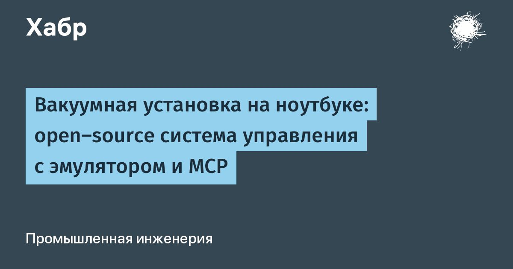

Открытый эмулятор вакуумной установки для проверки ИИ-агентов управления
Разработчики выпустили под открытой лицензией пакет APS Control Community — программу управления напылением, физический эмулятор оборудования и сервер MCP. Это позволяет тестировать алгоритмы управления вакуумными процессами на обычном ноутбуке без реального железа и контроллеров.
Архитектура эмуляции и сетевая прозрачность
Вместо условной компиляции эмуляция вынесена в отдельный сетевой процесс. Управляющая программа общается с драйверами Siemens S7 и периферийных приборов через стандартные TCP-сокеты: в лаборатории они ведут к реальному оборудованию, а на ноутбуке — к локальным адресам эмулятора. Система управления не знает, кто отвечает по сети — стойка с ПЛК или модель на C.
Такой подход устраняет классическую проблему самописных АСУ ТП: синхронные запросы к железу в общий пул потоков. Здесь каждой шине выделен собственный постоянный поток с приоритетом LongRunning, поэтому задержка одного контроллера не блокирует соседние линии и интерфейс оператора.

Физическая модель камеры и ускоренное время
Эмулятор рассчитывает состояние камеры по балансу газа и тепла. Эффективная скорость откачки зависит от открытия дроссельной заслонки квадратично, а постоянная времени камеры определяется отношением объёма к эффективной скорости. Регуляторы расхода газа выходят на уставку с постоянной времени полсекунды, нагрев и остывание подложкодержателя моделируются по закону Стефана — Больцмана.
Модельные часы в окне эмулятора ускоряются в десять и более раз, поэтому ждать откачку и остывание в реальном времени не нужно. На ходу можно включить перегрев или отказ любого узла и посмотреть, как сработают защитные блокировки системы управления.

Три конфигурации и текстовые рецепты
В комплекте три профиля: простая камера с двумя магнетронами, установка со шлюзом загрузки и четырёхкамерный кластер с транспортным роботом. Для кластера эмулятор поднимает пять независимых виртуальных ПЛК, а сценарии согласовывают откачку, выравнивание давлений и открытие шиберов между контроллерами.
Технологический процесс записывается текстовым сценарием внутри XML-файла. Встроенный редактор подсвечивает синтаксис, в поставке уже есть штатные программы откачки и запуска. Анализатор validaterecipe проверяет рецепт до запуска: например, предупредит, если обнуление расходомера переведёт камеру в недопустимый дежурный режим при закрытом дросселе.
MCP-интерфейс и уровни доступа для агентов
Универсальный навык оператора и бенчмарк из 46 задач позволяют проверять любые модели в одинаковых условиях. Доступ агентов отключён по умолчанию, скрипт создаёт локальный TLS-сервер и команду для подключения через stdio. Семнадцать инструментов MCP разделены на три уровня: чтение схемы и датчиков, работа с рецептами, прямое управление узлами.
Даже с выданным ключом ни одна команда не пройдёт, пока человек не переведёт пульт в режим Online-Remote. В локальном режиме модель может читать датчики и проверять рецепты, но открыть клапан или запустить напыление система не позволит. Защитные блокировки на уровне ниже рецептов необратимы: клапан напуска воздуха проверяет восемь условий, а блокировка по давлению не даст поддать высокое напряжение в разгерметизированной камере.
Практическая работа с рецептами и валидатором
Прежде чем писать собственные рецепты, стоит обсудить с технологом напыления последовательность операций и допуски по давлению, мощности и времени для конкретных материалов. Эмулятор подходит инженерам АСУ ТП, разработчикам агентов и студентам для отработки логики управления без риска для оборудования. Тем, кто ожидает точного совпадения с реальной камерой до доли мТорр или ватта, модель может не подойти: она воспроизводит физику процесса в упрощённом виде, без учёта загрязнения дросселей, дрифта датчиков и паразитных утечек. Для старта достаточно распаковать архив на любой Windows-ПК, запустить эмулятор и управляющую программу — прав администратора не требуется.
Результат работы рецепта зависит от корректности заданных констант времени откачки, стабилизации расхода МФК и тепловых постояных подложкодержателя. Встроенный валидатор validaterecipe проверяет синтаксис и логические противоречия до запуска: например, предупредит, если команда обнуления аргона переведёт камеру в режим Idle при закрытом дросселе. В окне эмулятора можно ускорить модельное время в десять раз и на лету внедрять отказы насосов или перегрев, чтобы убедиться, что аварийная защита сработает и рецепт корректно прервётся. Штатные сценарии SYSTEMPUMPOUT и SYSTEMSTART служат эталоном для первых экспериментов.
Коротко: Открытый пакет APS Control Community даёт полноценную среду для разработки и тестирования ИИ-агентов управления вакуумными процессами на обычном ПК. Эмулятор воспроизводит газодинамику, термику и логику блокировок, а MCP-интерфейс с градацией доступа позволяет безопасно подключать языковые модели.
Какие промышленные задачи вы бы решили с помощью открытого эмулятора и подключения локальных моделей?